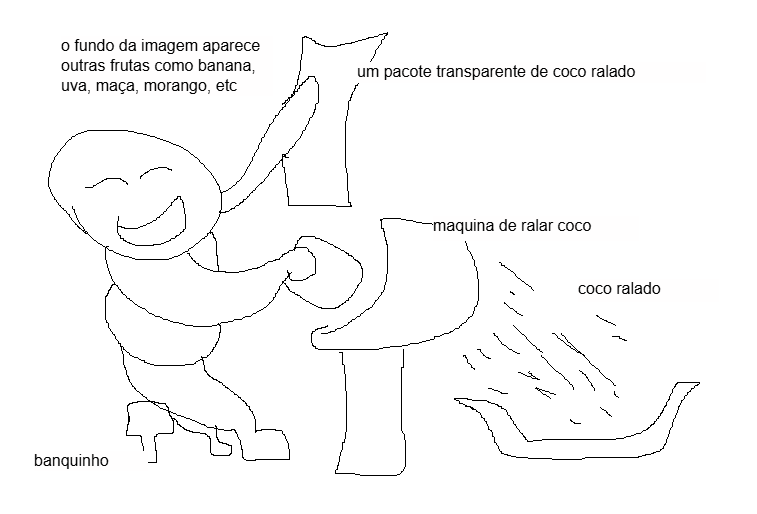

Perguntas Frequentes (FAQ)
As frutas vendidas são frescas?
Sim. As frutas são selecionadas diariamente, garantindo qualidade e frescor
para os clientes.
Quais formas de pagamento são aceitas?
Após contato pelo whatsapp com a Nil Frutas,podem ser feito pagamentos via PIX, Crédito, Débito ou pagamento na entrega.
A loja realiza entregas?
Sim. A Loja das Frutas realiza entregas dentro da cidade, conforme
disponibilidade.
O site realiza vendas reais?
Não. Este site foi desenvolvido exclusivamente para fins acadêmicos e não
realiza transações comerciais reais.
Como posso entrar em contato com a loja?
A comunicação pode ser realizada por meio do formulário disponível na página
de contato. (Ainda não configurado contato real. Botão dessa pagina é ficticio. Diferente do botão de compras.)
Como foi criado o logotipo e o personagem destinado para o site?
Foi desenhado o rascunho abaixo, e a partir disso, o desenho foi moldado com o axcuilio de uma ferramenta I.A
